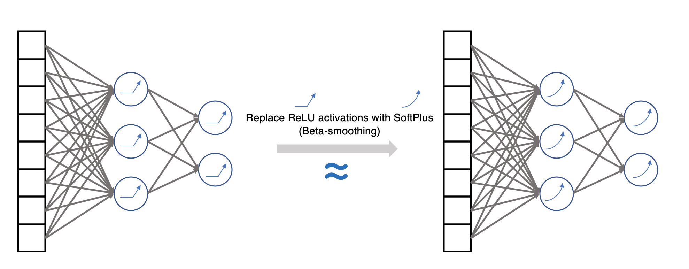
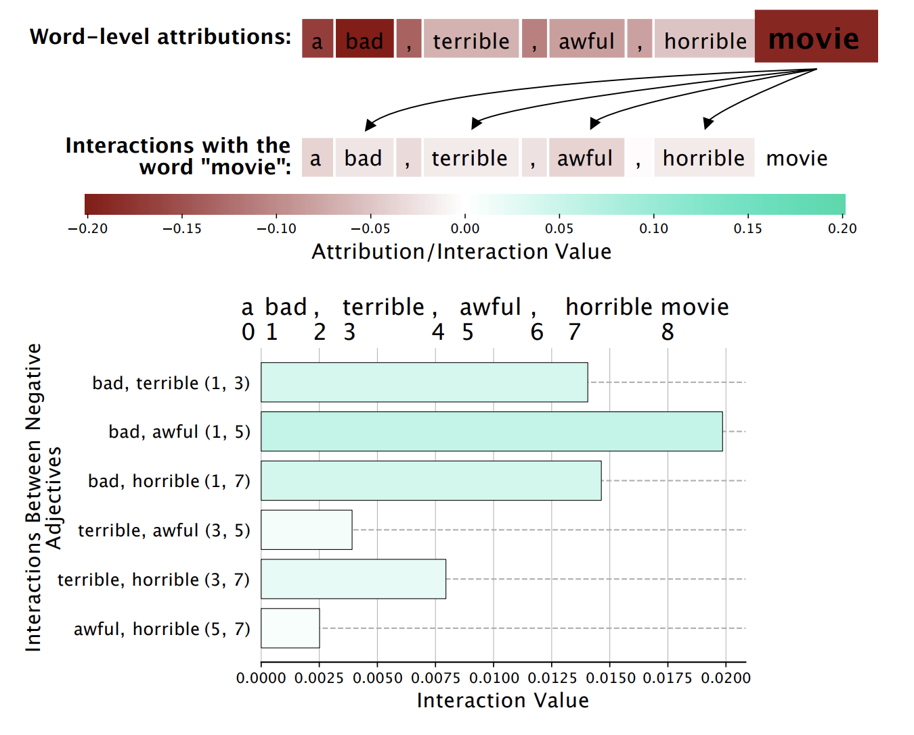

Finding interactions in deep neural networks with Integrated Hessians
This is (hopefully) an intuitive description of our new feature interaction method, Integrated Hessians. If you want a deeper dive into the math, you can check out our paper on arXiv. If you just want the code, you can check out our repo on GitHub. Please feel free to reach out with any questions or issues, especially if you want to apply Integrated Hessians to your own models!
Table of Contents
Intro: Why would I want to find feature interactions?
One of the most popular areas of research in the field of explainable AI has been feature attribution methods, which aim to identify the input features that have the greatest impact on a machine learning model’s predictions. While these methods have been helpful for a wide variety of applications, users may desire a greater degree of insight into model performance than a single scalar value per feature can provide.
For example, a recent survey of industry data scientists using explainable AI in deployment showed that many would like to be able to identify feature interactions – in the words of one of the data scientist interviewed, the ability to identify how “feature A will impact feature B.” To make the idea of feature interaction more concrete, we can consider a two-feature model of the very deadly Hypothetical Disease. In this model, the risk of Hypothetical Disease is determined solely by a patient’s gender and age. We can visualize the risk of disease for two patients, where Patient 1 is a 67 year-old man and Patient 2 is a 67 year-old woman. Looking at the overall risk, we can see that Patient 1 has a significantly higher overall risk than Patient 2. To understand why, we can examine the feature attributions for this model.

Looking at the attributions for gender, we see that Patient 1’s male gender contributes more risk than Patient 2’s female gender. This makes intuitive sense, as gender differences are often associated with different risks of disease.1 When we look at the age attribution, however, we can see that something more interesting is happening. While both patients are 67 years old, Patient 1 has more risk from being 67 than Patient 2. This is due to a feature interaction between gender and age. In this model, being a man not only carries a higher risk of disease than being a woman, it also increases the amount of risk due to age.

While it is pretty easy to figure out that gender is the feature interacting with age in this 2-feature model, trying to determine which features are responsible for interactions in high-dimensional data modeled with deep neural networks is more complicated. The next section will detail how we tried to solve this problem.
Our approach: Integrated Hessians
The data scientist mentioned in the introduction who wanted to understand how “feature A will impact feature B” provides the clearest motivation for our method. In essence, while feature attribution methods aim to explain how the value of each input feature will impact a model’s output, our feature interaction method aims to explain how the value of each input feature will impact each other feature’s attribution.
One of the most popular methods for feature attribution for neural networks is Integrated Gradients.2 This method attributes a scalar importance to each feature $i$ by averaging the gradients of the model $f$ along a linear interpolation path between a baseline $x'$ and a target sample $x$: $$ \phi_i (x) = (x_i - x’_i) \times \int_{\alpha=0}^{1} \frac{ \partial f(x’ + \alpha(x-x’)) }{\partial x_i} d\alpha. $$
The core insight of our approach was to realize that Integrated Gradients (which can be used to explain any differentiable function $f : \mathbb{R}^N \mapsto \mathbb{R}$) is itself a differentiable function $ \phi_i : \mathbb{R}^N \mapsto \mathbb{R}$.3 Therefore, we can apply Integrated Gradients to itself to identify feature interactions of the exact form desired by our data scientist. The Integrated Hessians interaction between features $i$ and $j$ is the impact of Feature $i$ on Feature $j$'s attribution: $$ \Gamma_{i,j} = \phi_i (\phi_j(x)). $$ This is the inspiration for the title of our paper, “Explaining Explanations,” since our interactions are found by explaining the output of an explanation method.3 This captures a human-intuitive definition of the interaction between two features: the interaction is the impact these features have on each other’s importance.
Why can’t I just look at the Hessian?
To provide some more context why you might want to use Integrated Hessians to find feature interactions, we try to explain the cases where existing methods may fall short. One obvious alternate approach would be to look at the network’s Hessian. While the network’s input Hessian contains information about the interaction between pairs of features, it suffers from the problem of saturation.

For example, consider a neural network representation of an XOR function (which has been scaled between -10 and 10). This network is “on” when either one of the two binary-valued features have a value of 1, but “off” when both features are either 0 or 1. At every point on the data manifold the network’s output is saturated (flat), meaning that its gradients and Hessians will be 0. While there is clearly an interaction between the two features, simply considering the input Hessian completely fails to find the interaction.
With Integrated Hessians, we consider many points along the straight-line path between a baseline and the input we want to explain. While the gradients and Hessians are saturated on all of the data manifold points, we come across many places with well-defined curvature between these points. Integrated Hessians is therefore able to correctly detect the negative interaction between the two features. This negative interaction matches human intuition. Each feature contributes positively to the network’s output when turned on alone. When turned on together, however, the interaction cancels out the positive contribution of each feature’s individual contribution.

In addition to our approach and the input Hessian, there are a variety of other methods that have been proposed for finding feature interactions in machine learning models. These include the Shapley Interaction Index and the Shapley-Taylor Interaction Index, which, like our approach, have game-theoretic connections. Another set of approaches include methods based on Group Attributions, like Contextual Decomposition and the Archipelago framework.4 Finally, there are global feature interaction detection methods, which find interactions for an entire model rather than for specific predictions.
While these are all good methods, our paper includes a more thorough discussion of the trade-offs between these different approaches. Our main takeaway is that Integrated Hessians strikes a good balance between computational efficiency and accuracy, especially for models with larger numbers of features.

One weird trick to find interaction in ReLU networks…
If you were paying close attention earlier, you might have noticed an apparent problem with our method. While Integrated Hessians can get around the problem of saturation in neural networks by integrating over a path, there are a large subset of networks where it will be impossible to find curvature anywhere in the input space – networks with ReLU activations. Since these networks are piecewise-linear, differentiating the model twice will always lead to values of 0. While this might sound like an impassable obstacle for our method, we found a smooth way to get around this issue.
While a ReLU function has all 0 higher derivatives, it has a smooth approximation with very nicely defined higher derivatives – the SoftPlus function: $\textrm{SoftPlus}_{\beta}(x) = \frac{1}{\beta}\log (1 + e^{-\beta x})$.

For example, consider the example5 of a single ReLU neuron with two input features, $f(x,y) = \textrm{ReLU}(-\frac{3x}{2} - 2y +2)$. We would hope to find a positive interaction between $x$ and $y$, since when both $x$ and $y$ have large values the network output is less negative than it would be if the function were additive. Unfortunately, since the ReLU network is piecewise-linear, it seems like Integrated Hessians will not find the interaction. If we apply Integrated Hessians to the SoftPlus approximation of this function, however, we see that Integrated Hessians can correctly identify the positive interaction between $x$ and $y$, in addition to the negative main effect for each feature.

While it’s nice to be able to explain this smooth approximation to a single neuron, what’s even more impressive is that this trick can be applied to an entire fully trained neural network. To explain a ReLU network, we can simply replace all of the ReLU activations with SoftPlus activations and explain the network with smooth activations (without any need to retrain).

We got this idea from this excellent paper on the geometry of neural network decision surfaces and the impact of this geometry on model explanation. Theoretically and empirically, this is a good approximation. One of my favorite results from our paper that I won’t really dig into here is that the smoother you make the approximation, the less samples along the interpolation path are necessary to get a good approximation to the “true” integral in Integrated Hessians.

Hyperbole and a Different Type of Saturation
One cool aspect of interpreting models is that we often find that models have learned surprising relationships between features. For example, we took a Transformer model that had been fine-tuned to predict whether a movie review had a positive or negative sentiment. We then wrote a gratuitously negative movie review, and used Integrated Hessians to find the interactions learned by the model.
Our review, “A bad, terrible, awful, horrible movie,” was of course predicted to have negative sentiment. Furthermore, each word gets an overwhelmingly negative first-order attribution. When we look at the interactions, however, we see something surprising.

Each negative adjective in the phrase has a very slight positive interaction with the other negative adjectives. It seems that the model has learned a sort of saturation effect in the presence of hyperbolic speech – when we combine all of the negative adjectives together, the model predicts a slightly less negative sentiment than we might expect if each word contributed negative sentiment independently. Whether this is desirable behavior reflecting real trends in the English language, or something the model learned in error, Integrated Hessians is able to reveal that the model has learned this trend at all. This highlights the benefit of examining feature interactions in models as opposed to just feature attributions. The attributions to the phrases and subphrases composing our review were all overwhelmingly negative. Examining the individual feature interactions shows an interesting trend that we wouldn’t have been able to find otherwise.
Conclusions
From our investigation, we can see that there are meaningful and interesting interactions between features in neural networks – Integrated Hessians can help us find them. While it was fun coming up with theoretical justifications in the paper for how nice our method is, one of our major goals is to actually make it usable for anyone who wants to find interaction in their own models! We encourage you to check out the GitHub repo (we now support TensorFlow 2 and PyTorch), and reach out to us with any and all questions and critiques about our method or software.
-
Emphasis on the word associated here. ↩︎
-
Integrated Gradients is the unique method that fulfills a bunch of desirable axioms (and is closely connected to the Aumann-Shapley value), all of which you can read about in the paper proposing that method. ↩︎
-
The logic behind naming our method Integrated Hessians becomes more obvious when we expand $ \Gamma_{i,j} $: $$ \Gamma_{i,j} = (x_i - x_i’)(x_j - x_j’) \times \int_{\beta = 0}^{1}\int_{\alpha = 0}^{1} \alpha \beta \frac{\partial^2 f(x’ + \alpha \beta(x - x’))}{\partial x_i \partial x_j}. $$ By directly computing the interpolated Hessians whenever possible instead of simply recursively applying integrated gradients to itself, we can take advantage of GPU acceleration to greatly increase our method’s efficiency. ↩︎
-
More in a future blog post about this, but I think both of these approaches have a different notion of interaction than Integrated Hessians does. I would call their methods something more like “Group Attribution” than “Interaction” – they both are concerned with attributing importance to interacting groups of features, while our method focuses on finding the magnitude and direction of the interactions between specific features. Their approaches aren’t any better or worse than ours, they just aim to answer a fundamentally different question and find a fundamentally different value (which is why their approaches do so poorly on the benchmarks we design, and ours probably do badly on the benchmarks they design). ↩︎
-
This example borrowed from Fig. 2 of the Archipelago paper. Despite their objection in the caption to that figure, Integrated Hessians does apply to ReLU networks. ↩︎
Joseph D. Janizek
MD-PhD Candidate
My research interests include Explainable AI, computational biology, and robust medical machine learning tools.